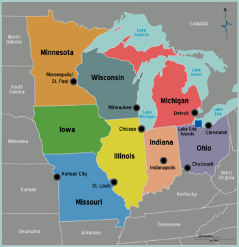
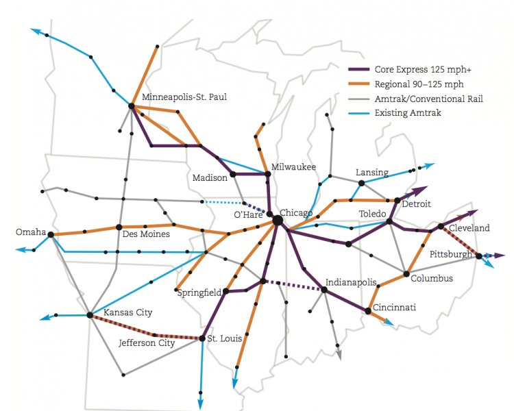

Competing Visions for the Future
As the United States begins to think about more climate friendly infrastructure and transportation projects, there is some competing visions for what that may look like. Elon Musk, with her Boring Company, have been able to court public officials across different cities in the United States to sell them on underground tunneling as a viable transportation method. Even after years of developing these plans, only one tunnel project has been constructed in Las Vegas, and not without problems. Our country is entering a crucial time for developing climate friendly regional transportation solutions that work for all people, not just those with the most funds or flashy projects.
Important Success Factors
Distance, housing and population density, and economic connectivity are all very important factors that need to be considered when developing high speed rail lines. It is essential that for these expensive projects to be successful, they are built in a way that benefits some of our largest population centers and continue to shift us away from the damaging car culture that has dominated our country for many of the past few decades.
The Long Overlooked Midwest
One region that seems primed for a high speed rail network is the Midwest. Home to many large cities that are an ideal distance apart from one another. Chicago has long been a massive railway hub, giving it a unique position to become the hub of a large midwest network of rail. There are many different organizations and groups that are pushing for the development and construction of a high speed regional rail network connecting Chicago to cities like Milwaukee, St Louis, Indianapolis, and Minneapolis in an efficient, fast, and more climate friendly way.
With such a large population living within an ideal distance for high speed rail within the Midwest, the opportunity to develop an extensive rail system that works is easily within reach. Some outside organizations have even created plans and maps that highlight what a rail network focused in the Midwest would look like.
Time will tell how the United States will begin to develop more expansive passenger rail projects but it is clear that high speed rail can work in specific areas of the U.S.. In order to confront the climate crisis headon, these projects should be fast tracked to ensure we don't continue growing our reliance on fossil fuels needed for most automobiles.